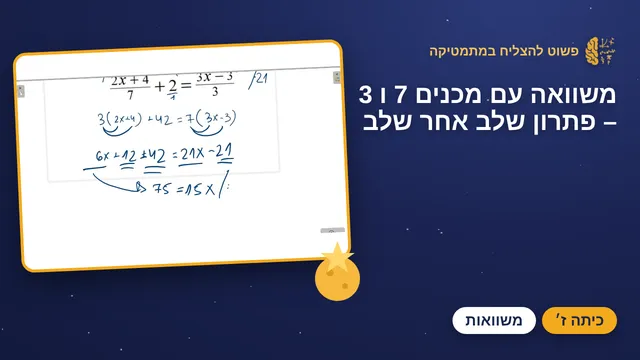
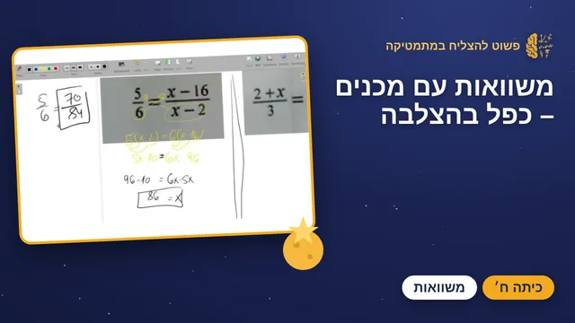
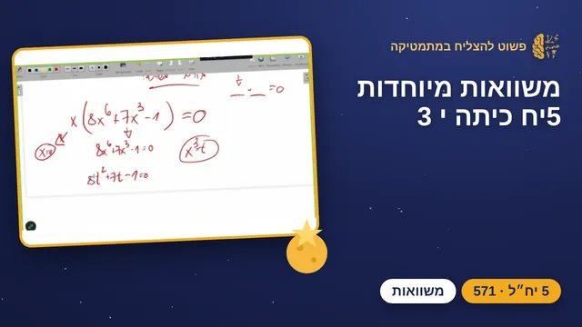
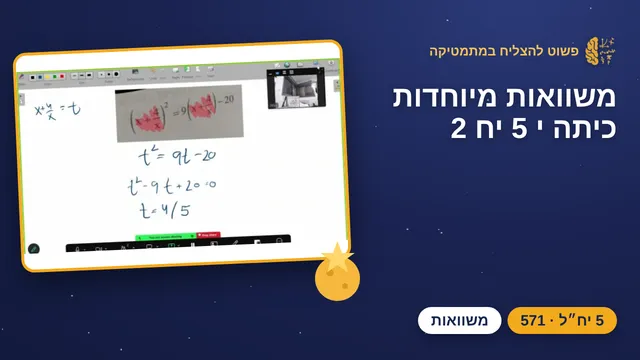
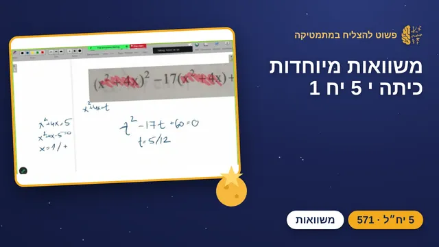
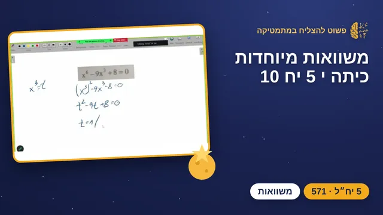
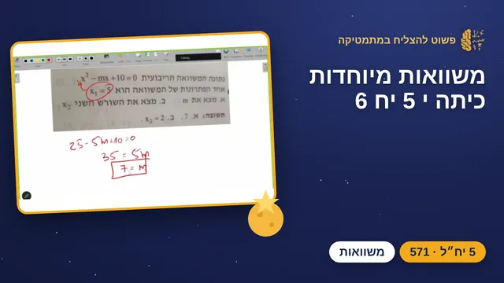
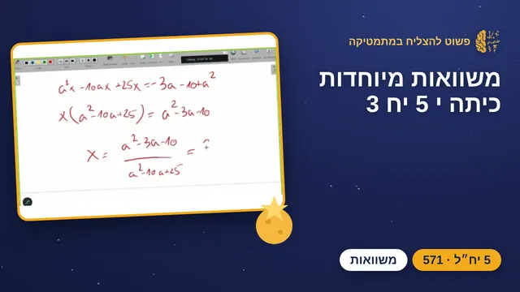
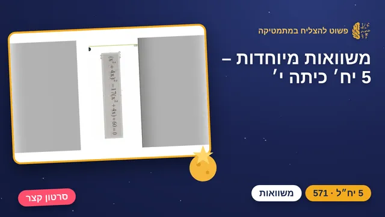

פשוט להצליח במתמטיקה › כל הנושאים › משוואות
משוואות – סרטוני הסבר ותרגול
25 סרטוני הסבר ותרגול בנושא משוואות – לכיתה ז׳, כיתה ח׳, כיתה ט׳, שאלון 571. כל נושא מוסבר מהקל אל הקשה: קודם הרעיון, אחר כך תרגילים, ובסוף שאלות בסגנון בגרות. הכול בחינם, בשיטת "פשוט להצליח".
רוצים לעקוב אחרי ההתקדמות?נרשמים בחינם, וכל סרטון שראיתם מסומן ✓. ממשיכים מכל מכשיר.
הצטרפות בחינם ←משוואות – כיתה ז׳ כל הנושאים של כיתה ז׳ ←
 משוואה עם שברים ומשתנה בשני האגפים
משוואה עם שברים ומשתנה בשני האגפים משוואה עם שברים – כפל במכנה משותף
משוואה עם שברים – כפל במכנה משותף
משוואה עם מכנים 7 ו 3 – פתרון שלב אחר שלב תרגיל לשחק עם משוואה – חוקי חשבון: אותה פעולה לכל האיברים
תרגיל לשחק עם משוואה – חוקי חשבון: אותה פעולה לכל האיבריםמשוואות – כיתה ח׳ כל הנושאים של כיתה ח׳ ←

משוואות עם מכנים – כפל בהצלבהמשוואה עם נעלם אחד ושבר כיתה חמשוואה עם נעלם אחד ושבר נדיר ביופיו כיתה ח משוואות עם נעלם אחדתרגיל לשחק עם משוואה – חוקי חשבון: אותה פעולה לכל האיבריםפתרון משוואות עם נעלם אחד · סרטון קצר
משוואות עם נעלם אחדתרגיל לשחק עם משוואה – חוקי חשבון: אותה פעולה לכל האיבריםפתרון משוואות עם נעלם אחד · סרטון קצרמשוואות – כיתה ט׳ כל הנושאים של כיתה ט׳ ←

משוואות – שאלון 571 כל הנושאים של שאלון 571 ←
 משוואות מיוחדות 5יח כיתה י 1
משוואות מיוחדות 5יח כיתה י 1
משוואות מיוחדות 5יח כיתה י 3 משוואות מיוחדות 5יח כיתה י 2
משוואות מיוחדות 5יח כיתה י 2
משוואות מיוחדות כיתה י 5 יח 2
משוואות מיוחדות כיתה י 5 יח 1 משוואות מיוחדות כיתה י 5 יח 11
משוואות מיוחדות כיתה י 5 יח 11
משוואות מיוחדות כיתה י 5 יח 10 משוואות מיוחדות כיתה י 5 יח 9
משוואות מיוחדות כיתה י 5 יח 9 משוואות מיוחדות כיתה י 5 יח 7
משוואות מיוחדות כיתה י 5 יח 7 משוואות מיוחדות כיתה י 5 יח 8
משוואות מיוחדות כיתה י 5 יח 8 משוואות מיוחדות כיתה י 5 יח 5
משוואות מיוחדות כיתה י 5 יח 5 משוואות מיוחדות כיתה י 5 יח 4
משוואות מיוחדות כיתה י 5 יח 4
משוואות מיוחדות כיתה י 5 יח 6
משוואות מיוחדות כיתה י 5 יח 3
משוואות מיוחדות – 5 יח׳ כיתה י׳ · סרטון קצר